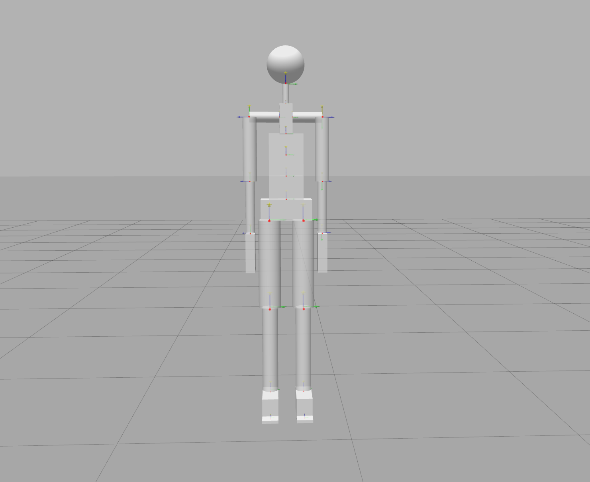

human-gazebo
This repository contains the human gazebo models that are used with Human Dynamics Estimation software suite. The files are generated using xsens motion capture data and mvnx-to-urdf. The human model links are made of several simple rigid bodies as shown in the figure below:

The measurements of each of the human subject are available from the table. Please refer to the human subject data pdf file to know how these measurements are taken. The urdf models are generated from xsens mvnx file generated through xsens mvn studio software suite. The code to generate the model is available here
| Subject | Mass [kg] | Height [cm] | Foot size [cm] | Arm span [cm] | Ankle height [cm] | Hip height [cm] | Hip width [cm] | Knee height [cm] | Shoulder width [cm] | Shoulder height [cm] | Sole height [cm] |
|---|---|---|---|---|---|---|---|---|---|---|---|
| 1 | 62.2 | 168 | 24 | 163 | 8 | 91 | 25 | 48.5 | 35.4 | 140 | - |
| 2 | 79.4 | 176 | 26 | 169 | 8 | 94 | 33 | 48 | 40 | 140 | - |
| 3 | 75.4 | 180 | 27 | 190 | 8 | 102 | 28 | 58 | 43 | 148 | - |
| 4 | 72.7 | 182 | 26 | 197 | 8 | 102 | 29 | 56 | 42 | 150 | - |
| 5 | 55 | 168 | 24 | 168 | 8 | 98 | 25 | 52 | 38 | 139 | - |
| 6 | 71.2 | 179 | 29 | 180 | 8 | 100 | 31 | 49 | 43 | 147 | - |
| 7 | 78.9 | 178 | 28 | 192 | 8 | 102 | 30 | 52 | 44 | 148 | - |
| 8 | 55.2 | 166 | 25 | 170 | 8 | 90 | 28 | 45 | 37 | 139 | - |
Currently, the legacy directory contains files related to joint motor control boards based on gazebo-yarp-plugins and other configuration files needed to control the human joints.
Human subject with meshes
In the folder humanSubjectWithMeshes there is a urdf model of a human subject generated using the code in human-model-generator with meshes under CC-BY_SA license (https://creativecommons.org/licenses/by-sa/2.0/deed.en); all the meshes were trimmed, morphed and totally or partially reconstructed to reach the desired shape and topology. The model is shown in the following figure:
Mantainers
- Davide Gorbani (@davidegorbani)
- Carlotta Sartore (@CarlottaSartore)